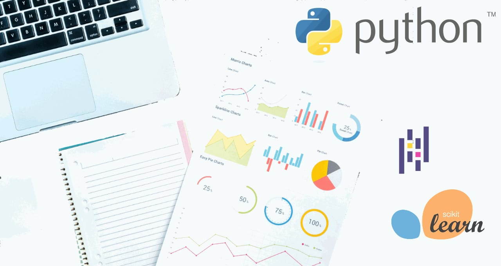
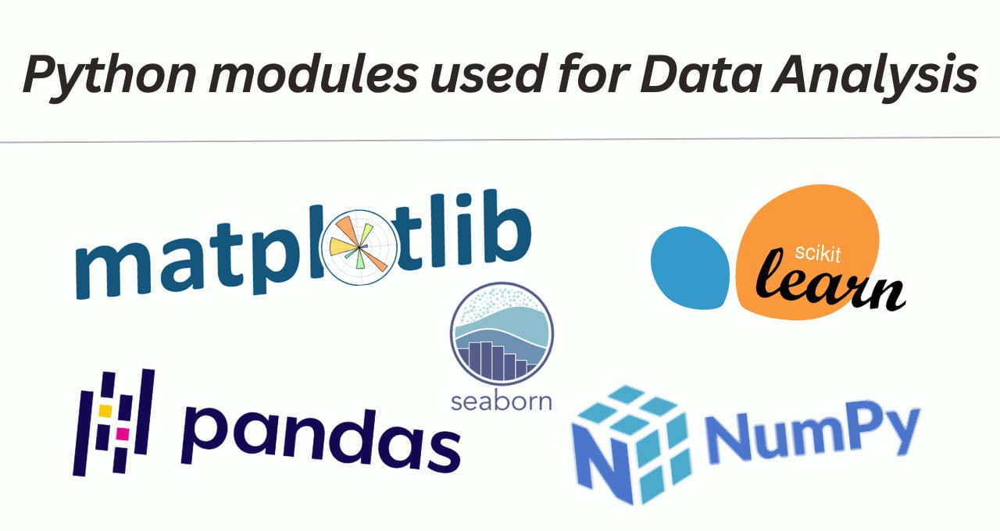

Python for data analytics, how python is used in data
analytics?
Last modified - 19-01-2023
Do you know what is data analytics? If yes then you might know about python. Python is a popular programming
language for building websites, desktop apps, and cross-platform applications, and it is also used in data
analytics due to its simplicity, readability, and a wide range of powerful libraries like NumPy, Pandas, and
Matplotlib for data manipulation and visualization, and scikit-learn for machine learning. These libraries
provide a wide range of tools for data cleaning, pre-processing, and analysis, making it easy to perform
complex tasks with minimal code. Additionally, Python's integration with big data tools such as Apache Spark
and Hadoop makes it well-suited for large-scale data processing and analytics.

What is Data analytics?
Above we read about data analytics and the use of python in it but what is data analytics? So, data analytics
is the process of examining, cleaning, transforming, and modeling the data to get minimal and useful
information, conclude, and help in decision-making. It involves using techniques such as statistical
analysis, machine learning, and data visualization to uncover patterns and insights in data. Data analytics
can be applied to various types of data, including structured data in databases and unstructured data in
text, images, and audio. The goal of data analytics is to transform data into easy and useful insights that
can be used to improve business processes, decision-making, and drive growth. In easy words, data analytics
is organizing data in a good manner such that only useful information is drawn from it.
Which python modules are used in data analytics?
Many Python modules are commonly used for data analytics. Some of these are:
- NumPy: a library for scientific computing with Python that provides support for large, multi-dimensional
arrays and matrices of numerical data, as well as a large collection of mathematical functions to
operate on these arrays.
- Pandas: a library for data manipulation and analysis that provides data structures for efficiently
storing and manipulating large datasets in a tabular form, similar to a spreadsheet.
- Matplotlib: a library for data visualization that provides an extensive range of 2D and 3D plotting
capabilities and allows for the creation of various types of charts and graphs.
- Scikit-learn: a library for machine learning that provides a wide range of tools for model selection,
evaluation, and prediction, as well as datasets for testing and evaluating models.
- Seaborn: a visualization library based on Matplotlib that provides a high-level interface for creating
attractive statistical graphics and allows for the creation of complex visualizations with fewer lines
of code.
- Plotly, bokeh, and folium: are libraries for interactive visualization.
These are just a few examples, there are many more libraries available for specific tasks such as natural
language processing, computer vision, and time series analysis.

Why Python is better than other programming languages?
In this world of programming, you may have heard about many languages like Java, C, C++, and many more, but
why is python better than other languages when it comes to data analysis, some of the reasons are:
- Readability: Python's simple, clean syntax and high-level data structures make it easy to write and
understand the code, which can be especially helpful when working with complex data sets.
- Large Community: Python has a large and active community of users, which means that there are many
libraries and tools available to help with data analysis tasks.
- Wide range of libraries: Python's extensive collection of libraries, such as NumPy, Pandas, and
Scikit-learn, provides powerful tools for data manipulation, analysis, and visualization, making it easy
to perform complex tasks with minimal code.
- Interoperability: Python can be easily integrated with other languages and tools commonly used in data
analysis and data science, such as R, SQL, and Hadoop.
- Machine Learning: Python has a wide range of libraries for machine learning, such as TensorFlow, Keras,
and scikit-learn, which makes it a great choice for building and deploying predictive models.
- Versatility: Python is a general-purpose programming language and can be used for a wide range of tasks
beyond data analysis and data science, such as web development, scripting, and more.
- Good documentation and tutorials: Python has good documentation and tutorials available online, which
makes it easier for beginners to learn and start working with Python.
Where Python is being used in data analysis?
Here are a few common examples:
- Data Cleaning and Pre-processing: Python's Pandas library can be used to clean and pre-process data by
filtering, aggregating, and transforming large datasets.
- Data Visualization: Python's Matplotlib, Seaborn, and Plotly libraries can be used to create various
types of charts and graphs, such as line plots, histograms, scatter plots, and heatmaps, to visualize
and explore data.
- Statistical Analysis: Python's NumPy and SciPy libraries can be used to perform statistical analysis on
data, such as calculating means, medians, and standard deviations, as well as fitting models to data and
performing hypothesis testing.
- Machine Learning: Python's Scikit-learn library can be used to build, train, and evaluate machine
learning models, such as linear and logistic regression, decision trees, and neural networks, on data.
- Predictive Modelling: Python's TensorFlow, Keras, and PyTorch libraries can be used to train deep
learning models for image and text recognition, natural language processing, and more.
- Natural Language Processing: Python has a lot of libraries such as NLTK, spaCy, gensim, etc, which can
be used for natural language processing tasks such as text classification, sentiment analysis, named
entity recognition, and more.
- Time Series Analysis: Python has libraries such as statsmodels, prophet, and fbprophet which can be used
for time series analysis, such as decomposing time series data into trend, seasonality, and residual
components, and forecasting future values.
- Web scraping: Python's BeautifulSoup and Scrapy libraries can be used to extract data from websites and
APIs for further analysis.
These are just a few examples, Python can be used for many more data analysis tasks. So this is how python is
used in data analytics, you can follow us on our social media handles and for more coding related article
visit here.